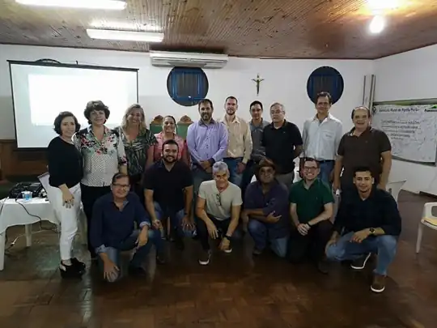
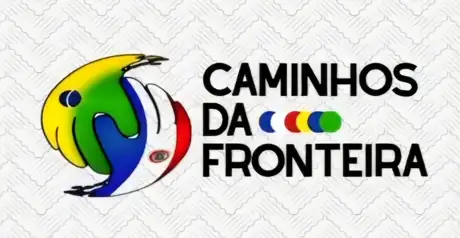

Somos a união de lideranças públicas, empresariais e da sociedade civil de onze municípios da faixa de fronteira de Mato Grosso do Sul com o Paraguai — um só território, dois países, trabalhando por desenvolvimento, inovação e integração.
A Fronteiras da Inovação é uma associação civil de desenvolvimento regional criada por lideranças da faixa de fronteira MS–Paraguai, após um ano de capacitação e articulação no Programa Líder Fronteira do Sebrae/MS.
A Agência articula municípios, instituições, setor produtivo e sociedade para transformar potencialidades compartilhadas em desenvolvimento — fortalecendo a cooperação Brasil–Paraguai e preparando o território para as novas conexões da Rota Bioceânica.

Potencialidades que viram experiências, negócios, renda e posicionamento territorial.
A fronteira como integração, cooperação e oportunidades entre Brasil e Paraguai.
Conhecimento que vira competência, empreendedorismo e novos negócios.
Desafios compartilhados que viram cooperação e soluções integradas na fronteira.
Produção que ganha valor agregado, inovação, competitividade e mercados.
Articulação que vira estratégia, execução e resultados para o território.
Onze municípios na faixa de fronteira MS–Paraguai, conectados pelas BR-463, BR-267 e MS-156 — oito deles na própria linha internacional, com cidades-gêmeas do lado paraguaio, e Porto Murtinho como travessia da ponte binacional da Rota Bioceânica. Clique num município para abrir o perfil completo.
Cada município tem um perfil completo para investidores e parceiros: população, economia, fronteira, vocações e oportunidades por eixo — com dado público, fonte e ano em cada número.
O encontro binacional do eixo de Relações Internacionais: integração Brasil–Paraguai, cooperação institucional e as oportunidades da nova fronteira.
Saúde transfronteiriça e ambiente de negócios: soluções compartilhadas para os desafios comuns do território e novas conexões para investir na fronteira.

A Instância de Governança Regional Caminhos da Fronteira organiza o turismo dos onze municípios do território — da pesca esportiva no rio Paraguai e do Pantanal Sul, em Porto Murtinho, ao patrimônio histórico do rio Apa e à cultura ervateira da linha internacional — estruturando roteiros integrados e o posicionamento binacional do destino.
Com a inclusão de Porto Murtinho, a IGR consolida o mapa turístico completo da fronteira sul-mato-grossense com o Paraguai.